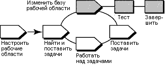

Обзор
На следующей диаграмме показан поток операций UCM. Затемненные области описаны в этой памятке.

В модели UCM операции (работа) доставляется от нескольких источников и является интегрированной и упорядоченной в
контрольные версии. Обычно контрольные версии проходят через цикл тестирования и исправления ошибок, пока не будет
достигнут удовлетворительный уровень стабильности. Когда контрольная версия достигнет этого уровня, менеджер проекта
присвоит ей статус рекомендованной контрольной версии для потока.
Для работы с набором версий в рекомендованной контрольной версии перебазируйте рабочую область разработки. Для
минимизации объема необходимых слияний при разработке операций, перебазируйте рабочую область разработки для каждой
новой рекомендованной контрольной версии по мере их выхода.
Эта памятка по инструменту применима к Microsoft Windows.
Этапы работы с инструментами
Операция перебазирования включает в себя следующие задачи:
-
Подготовка представления разработки
-
Запуск операции перебазирования
-
Слияние файлов
-
Тестирование рабочей области разработки
-
Завершение операции перебазирования
 Обратитесь к
следующим разделам электронной справки ClearCase для получения дополнительных сведений об этапах процедуры: Обратитесь к
следующим разделам электронной справки ClearCase для получения дополнительных сведений об этапах процедуры:
-
Сравнение файлов, каталогов и версий
-
Слияние файлов, каталогов и версий
-
Добавьте всю работу перед началом операции перебазирования. ClearCase обновляет только добавленные фалы и каталоги.
Утилита ClearCase Найти изъятые позволяет обнаружить все изъятые версии в представлении.
-
Перейдите к рабочей области разработки. В левой панели щелкните правой кнопкой мыши на каталоге view и
выберите ClearCase > Найти изъятые.
Обратитесь к
разделу Поиск изъятых элементов в электронной справке ClearCase для получения подробных сведений о поиске
изъятой работы.
-
Вызовите операцию перебазирования из представления, прикрепленного к потоку разработки.
-
В диалоговом окне Просмотр потока будут показаны рекомендованные контрольные версии проекта для перебазирования.
После начала операции перебазирования она выполнит слияние файлов и сообщит вам о конфликтах файлов, которые
необходимо решить вручную.
Обратитесь к
разделу Для начала операции перебазирования электронной справки по ClearCase для получения подробных
сведений о данной процедуре.
-
ClearCase объединяет работу в потоке разработки с работой в потоке интеграции, выполняя обычные слияния
автоматически.
-
При обнаружении необычных конфликтов слияния операция перебазирования запускает утилиту DiffMerge и
предлагает вам устранить конфликты.
Обратитесь к разделу
Слияние файлов, каталогов и версий электронной справки ClearCase для получения подробных сведений об описанных в
этой процедуре этапах.
-
Создайте и протестируйте исходные файлы в представлении разработки для проверки успешной компиляции не доставленных
операций с версиями контрольной версии.
-
После перебазирования создайте и протестируйте исходные файлы в представлении разработки для проверки успешной
компиляции не доставленных операций с версиями контрольной версии.
Завершение операции перебазирования состоит из двух задач: добавление и слияние результатов и изменение состояние
операции на "выполнено".
-
Протестировав работу нажмите кнопку Выполнить в окне Состояние Rebase.
-
ClearCase проверяет изъятые версии в представлении разработки и сообщает потоку разработки о выполнении операции
перебазирования.
-
Для закрытия окна нажмите кнопку Закрыть.
 Дополнительное
описание каждого шага приведено в разделе "Перебазирование рабочей области" в руководстве ClearCase Разработка
ПО. Дополнительное
описание каждого шага приведено в разделе "Перебазирование рабочей области" в руководстве ClearCase Разработка
ПО.
|